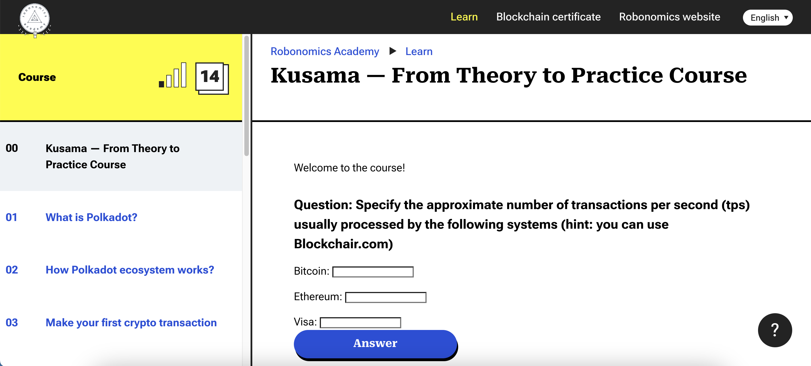

Courses
Описание учебных курсов
Крипта: от теории к практике
Описание
Учебный курс "Крипта: от теории к практике" погрузит вас в историю блокчейна, объяснит что представляют из себя криптовалюты, как устроен майнинг и многое другое. Достаточно интреесный курс с практическим уклоном, позволяющий вам познакомится с основами криптовалют, создать свой криптокошелек и многое другое.
Пререквизиты
Инструкция:
1. Ссылка на вход: Авторизация
2. Ссылка для регистрации в группу (DPO-15-STUD-23): Обычная регистрация по электронной почте
3. Залогиниться и перейти на страницу курса: Страница курса
4. Можно начинать учиться и выполнять задания. 2 месяца для прохождения курса.
Трудозатраты: Трудозатраты +- 16 часов (Практические занятия)
Метод оценивания
Вам необходимо прочитать/прослушать все лекции и выполнить все практики и финальное задание. Результаты работы необходимо выложить в таблицу. Данные о среднем проценте будут взяты на основе количества процентов выполненых заданий и изученных лекций. Оценка может варьироваться от 0 до 100%.
Сроки выполнения
У вас не больше 4-ух недель от старта занятий для выполнения данного задания.
Kusama - From Theory to Practice

Описание
Учебный курс "Kusama - From Theory to Practice" познакомит вас блокчейн сетями Kusama и robonomics.network созданной выпускниками ИТМО. Расскажет о использовании технологий распределенного реестра в задачах управления и хранения данных от IoT устройств, роботов и многого другого. Помимо этого у курса есть продолжение по роботу Spot от Boston Dynamics, с управлением роботом Spot в реальном времени.
Пререквизиты
Ссылка на курс: Kusama — From Theory to Practice Course
Трудозатраты: Трудозатраты 16 часов (Практические занятия)
Метод оценивания
Вам необходимо прочитать все лекции и выполнить все практики. После окончания всех заданий вам необходимо запросить IPFS сертификат о прохождении курса. Результаты работы необходимо выложить в таблицу. Получение IPFS сертификата предполагает что курс выполнен на 100%, курс без получения IPFS сертификата не считается пройденым.
Сроки выполнения
У вас не больше 4-ух недель от окончания предыдущего задания для выполнения данного задания.
Онлайн лекционный курс на eDEX по Kubernetes
Описание
Онлайн лекционный курс на eDEX по Kubernetes является справочным, платить за курс не надо, также дополнительно будут проводится лекции на русском языке уточняющие и расширяющие некоторые моменты из этого курса. Помимо этого будет 4 лабораторных работы по теме онлайн и офлайн лекций для проверки ваших знаний.
Пререквизиты
Ссылка на курс: Introduction to kubernetes
Трудозатраты: Трудозатраты +- 20 часов (Практические занятия)
Метод оценивания
Вам необходимо прочитать/прослушать все лекции и выполнить все лабораторные работы. Результаты работы необходимо выложить в таблицу. Формат защиты лабораторных работ будет сообщен дополнительно. Оценка может варьироваться от 0 до 100%.
Сроки выполнения
У вас не больше 6-и недель от окончания предыдущего задания для выполнения данного задания.
Написание технической статьи на Medium или Habr
Описание
Самое интересное задание из всех представленных, вам необходимо будет разработать и разместить техническую статью на Medium или Habr по любой из заинтересовавших вас тем которые будут рассмотрены на курсе с личного аккаунта.
Все авторы статьи должны быть указанны в ней на момент публикации.
Пререквизиты
Трудозатраты: Трудозатраты +- 6 часов (Самостоятельная работа)
Глубину статьи вы оцениваете самостоятельно, но к самой статье есть несколько требований:
- НИКАКОЙ РЕКЛАМЫ ТОКЕНОВ/ТЕХНОЛОГИЙ
- В случае если вы делаете обзор технологии/токена, вам необходимо привнести свою аналитику данной технологии/токена с технической/математической точки зрения.
- Постарайтесь красиво/качественно оформить свою статью, чтобы ее было приятно читать как вам, так и случайным посетителям ресурса на который вы выкладываете свою статью.
- Требование для статьи на Medium - Объем статьи на одного человека не менее 6 минут на прочтение, Medium сам это оценивает.
- Требование для статьи на Habr - необходимо чтобы плюсов было больше чем минусов.
Ссылки на полезные материалы для подбора тем:
- Introduction and Issues in distributed system
- Open Issues and Security Challenges of Data Communication Channels in Distributed Internet of Things (IoT): A Survey
- Distributed Systems Security Knowledge Area
- Google research for Distributed Systems and Parallel Computing
- PhD research topic in parallel and distributed systems
- Research at Web3 Foundation
- Ethereum research backlog
- Материалы прошлых лет
Метод оценивания
В ходе оценки статьи будут оцениваться следующие параметры:
- Техническое содержание и новизна идеи
- Объем статьи и количество использованных интересных источников/материалов
- Оценки от комментаторов статьи, результаты конструктивной критики.
Оценка может варьироваться от 0 до 100%.
Сроки выполнения
Вам необходимо приложить ссылку на статью не позднее чем за две недели до окончания учебной дисциплины.
Course Descriptions
Crypto: From Theory to Practice
Description
The course "Crypto: From Theory to Practice" will immerse you in the history of blockchain, explain what cryptocurrencies are, how mining works, and much more. It's an interesting course with a practical focus that allows you to familiarize yourself with the basics of cryptocurrencies, create your own crypto wallet, and more.
Prerequisites
Course Link: https://m.online.itmo.ru
Workload: Approximately 16 hours (Practical sessions)
Assessment Method
You need to read/listen to all lectures and complete all practical exercises and the final assignment. The results of your work must be uploaded to a table. Your grade will be based on the percentage of completed assignments and lectures. Grades may vary from 0 to 100%.
Deadline
You have no more than 4 weeks from the start of the course to complete this task.
Kusama - From Theory to Practice
Description
The course "Kusama - From Theory to Practice" will introduce you to the Kusama and robonomics.network blockchain networks created by ITMO University graduates. It will explain the use of distributed ledger technology in managing and storing data from IoT devices, robots, and more. In addition, the course has a continuation on working with Boston Dynamics' Spot robot in real-time.
Prerequisites
Course Link: Kusama — From Theory to Practice Course
Workload: Approximately 16 hours (Practical sessions)
Assessment Method
You need to read all lectures and complete all practical exercises. After completing all tasks, you need to request an IPFS certificate of course completion. The course is considered complete only if you receive the IPFS certificate.
Deadline
You have no more than 4 weeks from the completion of the previous task to complete this assignment.
Online Lecture Course on Kubernetes via edX
Description
The online lecture course on Kubernetes via edX is a reference course, and there is no need to pay for it. Additionally, there will be lectures in Russian that will clarify and expand on some aspects of this course. There will be four laboratory assignments related to the online and offline lectures to test your knowledge.
Prerequisites
Course Link: Introduction to kubernetes
Workload: Approximately 20 hours (Practical sessions)
Assessment Method
You need to read/listen to all lectures and complete all laboratory assignments. The results of your work must be uploaded to a table. The format of the laboratory work defense will be provided separately. Grades may vary from 0 to 100%.
Deadline
You have no more than 6 weeks from the completion of the previous task to complete this assignment.
Writing a Technical Article on Medium or Habr
Description
This is the most interesting assignment of all. You will need to develop and publish a technical article on Medium or Habr on any of the topics that interest you from the course.
All authors of the article must be mentioned in it at the time of publication.
Prerequisites
Workload: Approximately 6 hours (Self-study)
You evaluate the depth of the article on your own, but there are several requirements for the article:
- NO TOKEN/TECHNOLOGY ADVERTISING
- If you are reviewing a technology/token, you need to provide your analysis of this technology/token from a technical/mathematical point of view.
- Try to format your article beautifully and professionally so that it is enjoyable to read for both you and random visitors to the resource where you publish your article.
- Medium Article Requirement: The article should take at least 6 minutes to read per person, as assessed by Medium itself.
- Habr Article Requirement: It should have more pros than cons.
Useful Materials for Topic Selection:
- Introduction and Issues in distributed system
- Open Issues and Security Challenges of Data Communication Channels in Distributed Internet of Things (IoT): A Survey
- Distributed Systems Security Knowledge Area
- Google research for Distributed Systems and Parallel Computing
- PhD research topic in parallel and distributed systems
- Research at Web3 Foundation
- Ethereum research backlog
- Materials from Previous Years
Assessment Method
The following parameters will be evaluated during the assessment of the article:
- Technical content and novelty of ideas
- Article volume and the number of interesting sources/materials used
- Ratings from article commentators and constructive criticism results.
Grades may vary from 0 to 100%
Deadline
You must provide a link to the article no later than two weeks before the end of the course.